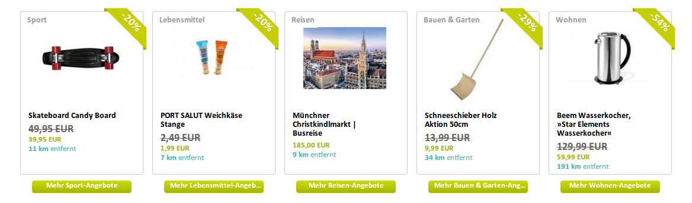
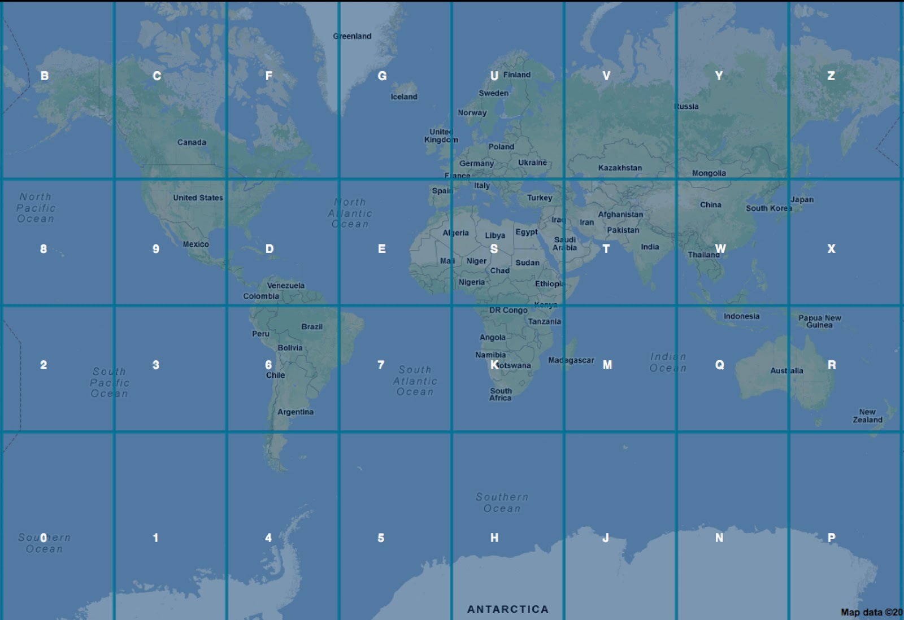
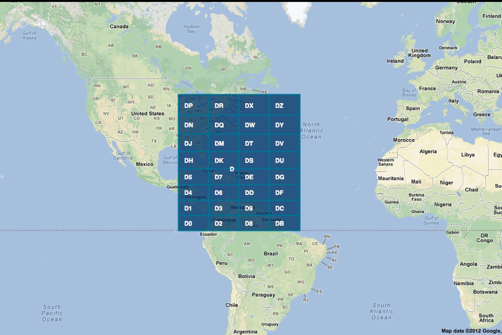
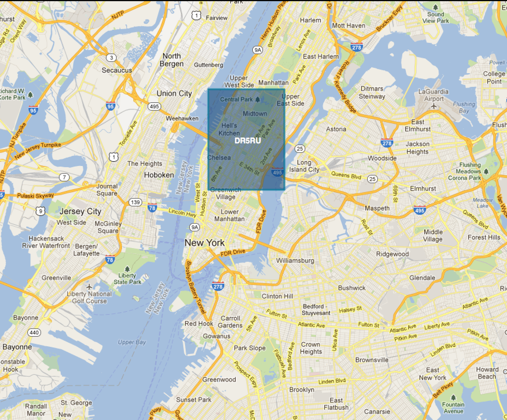

What to do
when a client wants to serve 110 million geotargeted banners from a VPS?
Luka Mužinić
wogibtswas.at
Client:
"do you know those widgets that we made long time ago?
we'd like tham to go live"
...
"well we don't have exact numbers, but approximately
110 million views per month"
...
"hello, HELLO?"
What is widget?
widget == banner
Stress test 1/2
Let see how many requests per second current solution can handle? Goal: ~45 req/s
7
#fail
Cache 101
code optimization
8
cache all DB queries
9
cache all Sphinx queries
12
sometimes it is better that requests don't even reach your application
- Tomicius
Rasimus
The trick
make your application generate whole page into cache
whole page, <html> to </html>
Nginx
can fetch it for you
directly from memcached
or from redis
Configuration 1/2
# widget nginx + memcached
location /widget/ {
set $memcached_key $geoip_city$uri;
if ($arg_company != '') {
set $memcached_key $memcached_key?company=$arg_company
}
default_type text/html;
memcached_pass 127.0.0.1:11211;
error_page 404 = @fallback;
expires +7200;
}Configuration 2/2
location @fallback {
proxy_pass http://apache.application.server:8081;
proxy_buffering off;
proxy_redirect off;
}Stress test 2/2
Let see how many requests per second current solution can handle?
Goal: ~45 req/s
~2010 req/s
wow. very fast. so much win.
Feedback

with keepalive https://gist.github.com/gjuric/7580148
~2035 req/s
:( values too big to have described effect
How to organize caching
our main problem was distance information
4. by IP address (approx. to much)
3. by town (1145)
2. by region (9)
1. whole Austria
Time to talk to client
How to motivate your client?
come to me with solution, don't come to me with problem
use triple constraint - cost, time, scope
quality
Final solution
VPS, 4 cores, 8 GB RAM
load barely noticeable
36 million req/month
peaks 50-60 req/second
additional memcache fallback
Add Memcache fallback
upstream memcached_backed {
server 192.168.1.1:11211;
server 192.168.1.2:11211;
}
# widget nginx + memcached
location /widget/ {
memcached_pass memcached_backed;
memcached_next_upstream error;
}Technology alternatives
Varnish, Edge Side Includes, web accelerators...
Caching alternatives
Geohash
Geohashing explained 1/3

Geohashing explained 2/3

Geohashing explained 3/3

Geohashing explained & tools
You are not alone!
comunicate with your colleagues, devops, hosting guys, clients, bosses...
Don't bullshit!
Errors, boo-boos, tips and tricks
cache stampede & cache warm up
google analytics
keep your cache alive
Thx!
@tomyz0r, @ivedrna, @msvrtan, @goran_juric and many others
kthxbai!
Questions?
Something to take home
have you ever seen a guy in gym that works only his biceps?
being the best developer is not enough
don't be that guy!